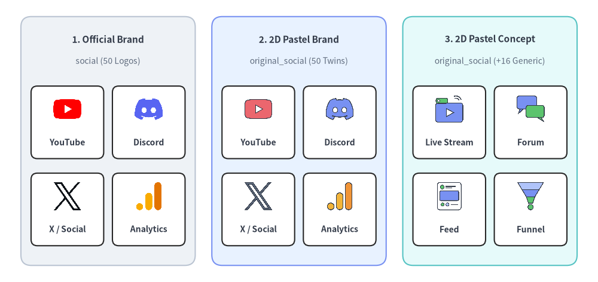
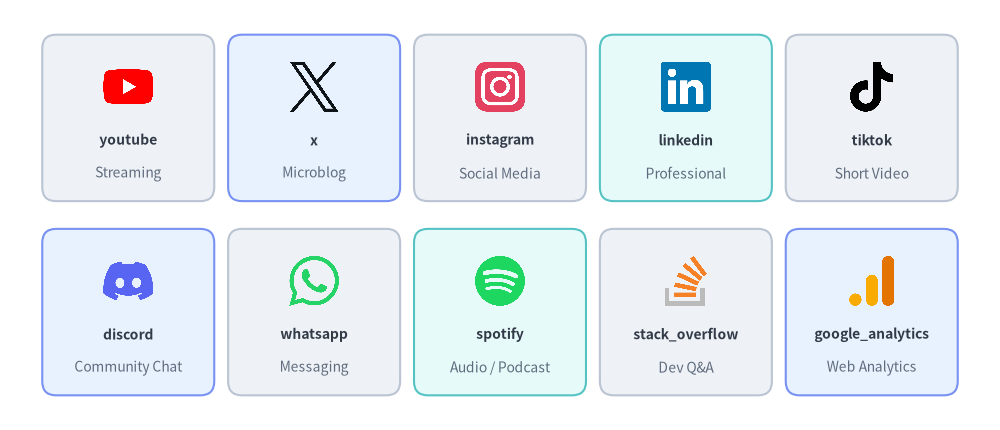
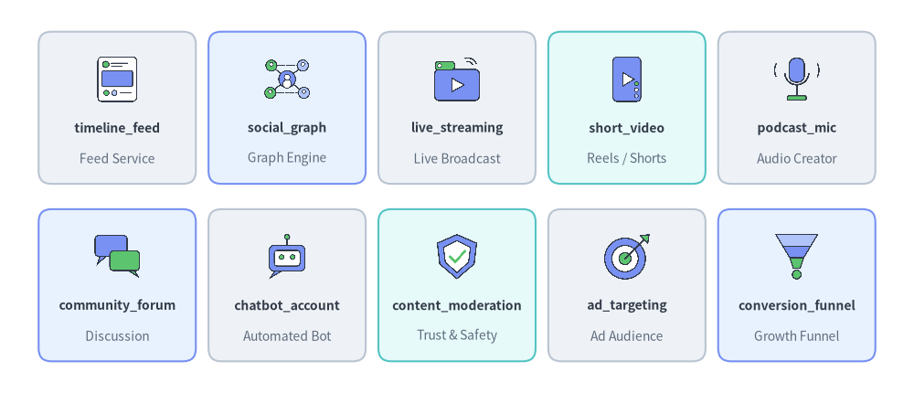
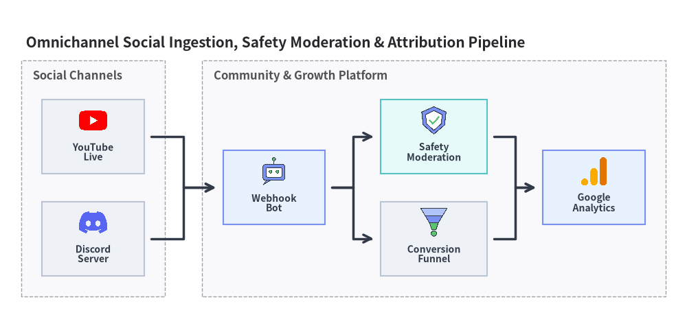

Social, Media & Community Icons
Drawlib provides 50 official brand icons in drawlib.icons.social (SocialIcon) and 66 flat 2D pastel icons in drawlib.icons.original_social (OriginalSocialIcon)—comprising all 50 matching brand twins plus 16 vendor-neutral social, content, and marketing analytics concept icons. Use these suites in standalone canvas layouts or inside Architecture Diagrams (see Icons Overview for the complete 34-module catalog).

Source Code
from drawlib.canvas import save, setup
from drawlib.icons import original_social, social
from drawlib.shapes import rectangle
from drawlib.styles import Styles
from drawlib.text import text
setup(width=144, height=68)
columns = [
(
26.0,
"1. Official Brand",
"social (50 Logos)",
Styles.Neutral,
[
("YouTube", social.youtube),
("Discord", social.discord),
("X / Social", social.x),
("Analytics", social.google_analytics),
],
),
(
72.0,
"2. 2D Pastel Brand",
"original_social (50 Twins)",
Styles.PrimaryNeutral,
[
("YouTube", original_social.youtube),
("Discord", original_social.discord),
("X / Social", original_social.x),
("Analytics", original_social.google_analytics),
],
),
(
118.0,
"3. 2D Pastel Concept",
"original_social (+16 Generic)",
Styles.SecondaryNeutral,
[
("Live Stream", original_social.live_streaming),
("Forum", original_social.community_forum),
("Feed", original_social.timeline_feed),
("Funnel", original_social.conversion_funnel),
],
),
]
for cx, title, subtitle, card_style, icons_list in columns:
rectangle((cx, 34), width=42.0, height=60, style=card_style.patch(shape_r=2.5))
text((cx, 58.5), title, style=Styles.DarkBold.patch(text_size=11.0))
text((cx, 53.2), subtitle, style=Styles.Muted.patch(text_size=10.0))
offsets = [(-9.8, 40.5), (9.8, 40.5), (-9.8, 19.5), (9.8, 19.5)]
sub_card_style = Styles.White.patch(shape_r=1.5, line_width=0.6)
for (dx, iy), (lbl, fn) in zip(offsets, icons_list, strict=True):
ix = cx + dx
rectangle((ix, iy - 2.0), width=17.5, height=17.5, style=sub_card_style)
fn((ix, iy + 1.2), width=7.5, style=Styles.Primary)
text((ix, iy - 6.8), lbl, style=Styles.DarkBold.patch(text_size=10.0))
save()
1. API Signature & Twin Module Structure
The Social icon pair is split into two parallel modules so you can choose between recognizable platform trademarks and a calm, unified 2D pastel aesthetic:
| Module | Diagram Enum | Canonical Count | Asset Package | Primary Use Case |
|---|---|---|---|---|
drawlib.icons.social |
SocialIcon |
50 | icon_social |
Official platform logos for social networks, chat apps, streaming services, developer communities, and AdTech tools. |
drawlib.icons.original_social |
OriginalSocialIcon |
66 (50 + 16) |
icon_original_social |
Flat 2D pastel twins for all 50 brands plus 16 vendor-neutral concept icons (timeline_feed, live_streaming, conversion_funnel, etc.). |
Every function in both modules renders a normalized 512×512 RGBA PNG anchored at its center (cx, cy) with a 1:1 square aspect ratio:
from drawlib.diagrams.architecture import Node, OriginalSocialIcon, SocialIcon
from drawlib.icons import original_social, social
from drawlib.styles import Colors, Styles
# 1. Direct canvas rendering — official brand vs. 2D pastel brand twin
social.youtube((30, 25), width=9.0, style=Styles.Primary)
original_social.youtube((50, 25), width=9.0, style=Styles.Primary)
# 2. Vendor-neutral concept icon with background tint & dashed border
framed = Styles.Primary.patch(
image_tint_color=Colors.Primary1,
image_border_color=Colors.Primary,
image_border_width=1.2,
image_border_style="dashed",
)
original_social.conversion_funnel((70, 25), width=9.0, style=framed)
# 3. Inside ArchitectureDiagram Node or SequenceDiagram Participant
ch_node = Node("Discord Bot", width=24, height=18, icon=SocialIcon.DISCORD, icon_size=7.5)
mod_node = Node("Moderation", width=24, height=18, icon=OriginalSocialIcon.CONTENT_MODERATION, icon_size=7.5)
2. Official & Pastel Brand Icons (social & original_social)
All 50 brand icons listed below share identical canonical function names across social.<name>() and original_social.<name>() (and identical uppercase enum members on SocialIcon.<NAME> and OriginalSocialIcon.<NAME>):

Source Code
from drawlib.canvas import save, setup
from drawlib.icons import social
from drawlib.shapes import rectangle
from drawlib.styles import Styles
from drawlib.text import text
setup(width=144, height=62)
row1 = [
("youtube", "Streaming", social.youtube, Styles.Neutral),
("x", "Microblog", social.x, Styles.PrimaryNeutral),
("instagram", "Social Media", social.instagram, Styles.Neutral),
("linkedin", "Professional", social.linkedin, Styles.SecondaryNeutral),
("tiktok", "Short Video", social.tiktok, Styles.Neutral),
]
row2 = [
("discord", "Community Chat", social.discord, Styles.PrimaryNeutral),
("whatsapp", "Messaging", social.whatsapp, Styles.Neutral),
("spotify", "Audio / Podcast", social.spotify, Styles.SecondaryNeutral),
("stack_overflow", "Dev Q&A", social.stack_overflow, Styles.Neutral),
("google_analytics", "Web Analytics", social.google_analytics, Styles.PrimaryNeutral),
]
for row_idx, items in enumerate([row1, row2]):
cy = 45.0 if row_idx == 0 else 17.0
for col_idx, (name, cat, icon_fn, card_st) in enumerate(items):
cx = 18.4 + col_idx * 26.8
rectangle((cx, cy), width=24.8, height=24.0, style=card_st.patch(shape_r=2))
icon_fn((cx, cy + 4.5), width=8.0, style=Styles.Primary)
text((cx, cy - 3.2), name, style=Styles.DarkBold.patch(text_size=10.0))
text((cx, cy - 8.0), cat, style=Styles.Muted.patch(text_size=10.0))
save()
2.1. Complete 50 Canonical Brand Icons (social & original_social)
| Category | Count | Canonical Function Names (social.<name> / original_social.<name>) |
|---|---|---|
| Social Networks & Microblogging | 10 | bluesky, facebook, instagram, linkedin, mastodon, pinterest, reddit, snapchat, threads, x |
| Messaging & Community Chat | 9 | discord, kakao, line, messenger, signal, telegram, viber, wechat, whatsapp |
| Video, Audio & Media Streaming | 11 | abema, apple_podcasts, bilibili, nicovideo, soundcloud, spotify, tiktok, tver, twitch, vimeo, youtube |
| Developer Communities & Publishing | 13 | connpass, dev_to, hacker_news, hashnode, hatena, medium, note, qiita, speaker_deck, stack_overflow, substack, yahoo_japan, zenn |
| AdTech, Attribution & Analytics | 7 | amplitude, appsflyer, google_ads, google_analytics, google_tag_manager, meta_ads, mixpanel |
3. Vendor-Neutral Concept Icons (original_social Exclusive)
In addition to the 50 brand twins, drawlib.icons.original_social (OriginalSocialIcon) provides 16 vendor-neutral social, media, community, and marketing funnel concept icons for white-label architecture blueprints:

Source Code
from drawlib.canvas import save, setup
from drawlib.icons import original_social
from drawlib.shapes import rectangle
from drawlib.styles import Styles
from drawlib.text import text
setup(width=144, height=62)
row1 = [
("timeline_feed", "Feed Service", original_social.timeline_feed, Styles.Neutral),
("social_graph", "Graph Engine", original_social.social_graph, Styles.PrimaryNeutral),
("live_streaming", "Live Broadcast", original_social.live_streaming, Styles.Neutral),
("short_video", "Reels / Shorts", original_social.short_video, Styles.SecondaryNeutral),
("podcast_mic", "Audio Creator", original_social.podcast_mic, Styles.Neutral),
]
row2 = [
("community_forum", "Discussion", original_social.community_forum, Styles.PrimaryNeutral),
("chatbot_account", "Automated Bot", original_social.chatbot_account, Styles.Neutral),
("content_moderation", "Trust & Safety", original_social.content_moderation, Styles.SecondaryNeutral),
("ad_targeting", "Ad Audience", original_social.ad_targeting, Styles.Neutral),
("conversion_funnel", "Growth Funnel", original_social.conversion_funnel, Styles.PrimaryNeutral),
]
for row_idx, items in enumerate([row1, row2]):
cy = 45.0 if row_idx == 0 else 17.0
for col_idx, (name, role, icon_fn, card_st) in enumerate(items):
cx = 18.4 + col_idx * 26.8
rectangle((cx, cy), width=24.8, height=24.0, style=card_st.patch(shape_r=2))
icon_fn((cx, cy + 4.5), width=8.0, style=Styles.Primary)
text((cx, cy - 3.2), name, style=Styles.DarkBold.patch(text_size=10.0))
text((cx, cy - 8.0), role, style=Styles.Muted.patch(text_size=10.0))
save()
3.1. Complete 16 Canonical Concept Icons (original_social Only)
Canonical Function (original_social.*) |
OriginalSocialIcon Enum |
Domain Category | Typical Architectural Role |
|---|---|---|---|
ad_targeting |
OriginalSocialIcon.AD_TARGETING |
AdTech & Growth | Audience segmentation and personalized ad delivery engine |
chatbot_account |
OriginalSocialIcon.CHATBOT_ACCOUNT |
Messaging & Bots | Automated webhook bot or conversational community agent |
community_forum |
OriginalSocialIcon.COMMUNITY_FORUM |
Community | User discussion board, Q&A portal, or support forum |
content_moderation |
OriginalSocialIcon.CONTENT_MODERATION |
Trust & Safety | Automated toxicity filtering, spam detection, and policy review |
conversion_funnel |
OriginalSocialIcon.CONVERSION_FUNNEL |
Analytics | Multi-stage user acquisition, activation, and checkout funnel |
influencer |
OriginalSocialIcon.INFLUENCER |
Creator Economy | Creator account, brand ambassador, or key opinion leader node |
live_streaming |
OriginalSocialIcon.LIVE_STREAMING |
Media & Video | Real-time RTMP/WebRTC video ingest and live broadcast pipeline |
podcast_mic |
OriginalSocialIcon.PODCAST_MIC |
Audio & Media | Audio recording, RSS podcast syndication, or voice room |
push_campaign |
OriginalSocialIcon.PUSH_CAMPAIGN |
Marketing | Outbound mobile/web push notification and re-engagement campaign |
short_video |
OriginalSocialIcon.SHORT_VIDEO |
Media & Video | Vertical short-form video transcoding and recommendation feed |
social_graph |
OriginalSocialIcon.SOCIAL_GRAPH |
Core Social | Follower/friend relationship graph and connection service |
social_login |
OriginalSocialIcon.SOCIAL_LOGIN |
Identity & Auth | OAuth2 / OIDC social sign-in federation gateway |
tech_blog |
OriginalSocialIcon.TECH_BLOG |
Publishing | Engineering blog, developer portal, or CMS article publisher |
timeline_feed |
OriginalSocialIcon.TIMELINE_FEED |
Core Social | Personalized home timeline fan-out and ranking service |
user_engagement |
OriginalSocialIcon.USER_ENGAGEMENT |
Analytics | Likes, reactions, comments, and retention telemetry tracker |
viral_share |
OriginalSocialIcon.VIRAL_SHARE |
Growth | Referral loop, social sharing card, and word-of-mouth virality |
4. Practical Architecture Diagram (SocialIcon & OriginalSocialIcon)
You can combine SocialIcon and OriginalSocialIcon directly inside ArchitectureDiagram to illustrate omnichannel social ingestion, trust & safety moderation, and marketing attribution pipelines:
from drawlib.canvas import save, setup
from drawlib.diagrams.architecture import (
ArchitectureDiagram,
Node,
NodeGroup,
OriginalSocialIcon,
SocialIcon,
)
from drawlib.styles import Styles
setup(width=148, height=68)
d = ArchitectureDiagram(
node_style=Styles.Primary,
node_text_style=Styles.DarkBold.patch(text_size=10.0),
edge_style=Styles.DarkBold,
edge_text_style=Styles.DarkBold.patch(text_size=10.0),
node_card_style=Styles.Neutral,
title="Omnichannel Social Ingestion, Safety Moderation & Attribution Pipeline",
)
# External Social Channels
channels = d.add(NodeGroup(title="Social Channels", padding=4.5), xy=(0.0, 0.0))
yt = channels.add(
Node("YouTube\nLive", width=22, height=16, icon=SocialIcon.YOUTUBE, icon_size=6.8),
xy=(15.5, 34.5),
)
dc = channels.add(
Node("Discord\nServer", width=22, height=16, icon=SocialIcon.DISCORD, icon_size=6.8),
xy=(15.5, 12.5),
)
# Core Engagement & Safety Platform
platform = d.add(NodeGroup(title="Community & Growth Platform", padding=4.5), xy=(39.0, 0.0))
bot = platform.add(
Node(
"Webhook\nBot",
width=22,
height=16,
icon=OriginalSocialIcon.CHATBOT_ACCOUNT,
icon_size=6.8,
card_style=Styles.PrimaryNeutral,
),
xy=(15.5, 23.5),
)
mod = platform.add(
Node(
"Safety\nModeration",
width=23,
height=16,
icon=OriginalSocialIcon.CONTENT_MODERATION,
icon_size=6.8,
card_style=Styles.SecondaryNeutral,
),
xy=(50.0, 34.5),
)
funnel = platform.add(
Node(
"Conversion\nFunnel",
width=23,
height=16,
icon=OriginalSocialIcon.CONVERSION_FUNNEL,
icon_size=6.8,
),
xy=(50.0, 12.5),
)
ga = platform.add(
Node(
"Google\nAnalytics",
width=22,
height=16,
icon=SocialIcon.GOOGLE_ANALYTICS,
icon_size=6.8,
card_style=Styles.PrimaryNeutral,
),
xy=(84.5, 23.5),
)
d.connect(yt, bot, padding=1.5)
d.connect(dc, bot, padding=1.5)
d.connect(bot, mod, padding=1.5)
d.connect(bot, funnel, padding=1.5)
d.connect(mod, ga, padding=1.5)
d.connect(funnel, ga, padding=1.5)
d.draw(xy=(4.5, 4.0))
save()

[!TIP] See Client Devices & Endpoints Icons (
client/original_client) for browsers, mobile OS platforms, and consumer devices, or return to Icons Overview.